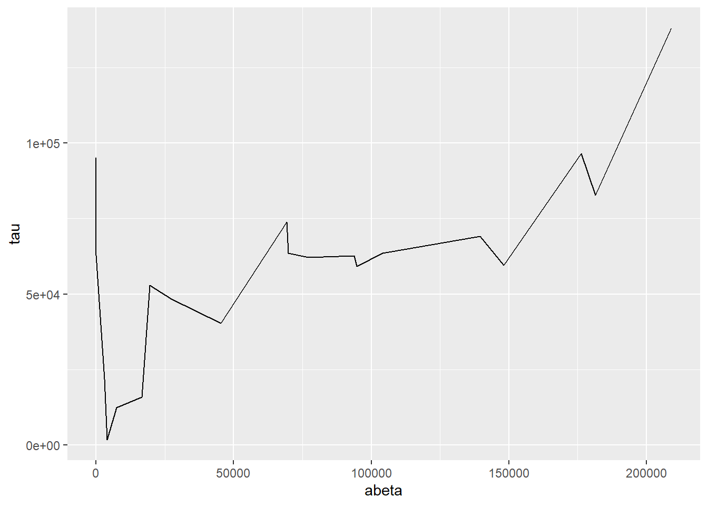

- Syllabus
- 1 Introduction
- 2 Data in Biology
- 3 Preliminaries
- 4 R Programming
- 4.1 Before you begin
- 4.2 Introduction
- 4.3 R Syntax Basics
- 4.4 Basic Types of Values
- 4.5 Data Structures
- 4.6 Logical Tests and Comparators
- 4.7 Functions
- 4.8 Iteration
- 4.9 Installing Packages
- 4.10 Saving and Loading R Data
- 4.11 Troubleshooting and Debugging
- 4.12 Coding Style and Conventions
- 4.12.1 Is my code correct?
- 4.12.2 Does my code follow the DRY principle?
- 4.12.3 Did I choose concise but descriptive variable and function names?
- 4.12.4 Did I use indentation and naming conventions consistently throughout my code?
- 4.12.5 Did I write comments, especially when what the code does is not obvious?
- 4.12.6 How easy would it be for someone else to understand my code?
- 4.12.7 Is my code easy to maintain/change?
- 4.12.8 The
stylerpackage
- 5 Data Wrangling
- 6 Data Science
- 7 Data Visualization
- 8 Biology & Bioinformatics
- 8.1 R in Biology
- 8.2 Biological Data Overview
- 8.3 Bioconductor
- 8.4 Microarrays
- 8.5 High Throughput Sequencing
- 8.6 Gene Identifiers
- 8.7 Gene Expression
- 8.7.1 Gene Expression Data in Bioconductor
- 8.7.2 Differential Expression Analysis
- 8.7.3 Microarray Gene Expression Data
- 8.7.4 Differential Expression: Microarrays (limma)
- 8.7.5 RNASeq
- 8.7.6 RNASeq Gene Expression Data
- 8.7.7 Filtering Counts
- 8.7.8 Count Distributions
- 8.7.9 Differential Expression: RNASeq
- 8.8 Gene Set Enrichment Analysis
- 8.9 Biological Networks .
- 9 EngineeRing
- 10 RShiny
- 11 Communicating with R
- 12 Contribution Guide
- Assignments
- Assignment Format
- Starting an Assignment
- Assignment 1
- Assignment 2
- Assignment 3
- Problem Statement
- Learning Objectives
- Skill List
- Background on Microarrays
- Background on Principal Component Analysis
- Marisa et al. Gene Expression Classification of Colon Cancer into Molecular Subtypes: Characterization, Validation, and Prognostic Value. PLoS Medicine, May 2013. PMID: 23700391
- Scaling data using R
scale() - Proportion of variance explained
- Plotting and visualization of PCA
- Hierarchical Clustering and Heatmaps
- References
- Assignment 4
- Assignment 5
- Problem Statement
- Learning Objectives
- Skill List
- DESeq2 Background
- Generating a counts matrix
- Prefiltering Counts matrix
- Median-of-ratios normalization
- DESeq2 preparation
- O’Meara et al. Transcriptional Reversion of Cardiac Myocyte Fate During Mammalian Cardiac Regeneration. Circ Res. Feb 2015. PMID: 25477501l
- 1. Reading and subsetting the data from verse_counts.tsv and sample_metadata.csv
- 2. Running DESeq2
- 3. Annotating results to construct a labeled volcano plot
- 4. Diagnostic plot of the raw p-values for all genes
- 5. Plotting the LogFoldChanges for differentially expressed genes
- The choice of FDR cutoff depends on cost
- 6. Plotting the normalized counts of differentially expressed genes
- 7. Volcano Plot to visualize differential expression results
- 8. Running fgsea vignette
- 9. Plotting the top ten positive NES and top ten negative NES pathways
- References
- Assignment 6
- Assignment 7
- Appendix
- A Class Outlines
7.5 Plotting Two or More Dimensions
Multi-dimensional plots allow relationships between different quantities to be depicted visually. As mentioned in the [Elemental Perceptual Tasks] section, this involves mapping data to visual elements using different encodings. The plot types in this section are examples of these different approaches to combining visual data encodings.
7.5.1 Scatter Plots
Scatter plots visualize pairs of quantities, usually continuous, as points in a two dimensional space. Most commonly, the points are plotted in cartesian coordinates, but polar coordinates or other types of coordinate systems.
ggplot(ad_metadata,mapping=aes(x=abeta, y=tau)) +
geom_point(size=3)
The geom_point() geometry draws a shape, circle by default, at pixel
coordinates proportional to each \((x,y)\) pair. The shape may be changed by
specifying the shape=N parameter to geom_point, where N is an integer ID
of the shape. The following plot shows which IDs correspond to which shapes:
g <- ggplot()
for(x in 0:5) {
for(y in 0:4) {
if(x+y*6 < 26) {
g <- g + geom_point(aes(x=x,y=y),tibble(x=x,y=y),shape=x+y*6,size=8) +
geom_label(aes(x=x,y=y+0.5,label=label),tibble(x=x,y=y,label=x+y*6))
}
}
}
g
However, geom_points() will choose up to six different shapes for you if you
map a categorical encoding to the shape aesthetic:
ggplot(ad_metadata,mapping=aes(x=abeta, y=tau, shape=condition)) +
geom_point(size=3) Controlling which shapes are mapped to which value can be accomplished with
Controlling which shapes are mapped to which value can be accomplished with
scale_shape_manual():
ggplot(ad_metadata,mapping=aes(x=abeta, y=tau, shape=condition)) +
geom_point(size=3) +
scale_shape_manual(values=c(3,9))
Color encodings can also be added using either a continuous or discrete values:
library(patchwork)
g <- ggplot(ad_metadata)
g_condition <- g + geom_point(mapping=aes(x=abeta, y=tau, color=condition),size=3)
g_age <- g + geom_point(mapping=aes(x=abeta, y=tau, color=age_at_death),size=3)
g_condition / g_age
7.5.2 Bubble Plots
A close relative of the scatter plot is the bubble plot. A bubble plot is a scatter plot where the area of the point markers is proportional to a third continuous dimension. Consider the plot from above, with age at death encoded as the area of each point:
ggplot(ad_metadata,mapping=aes(x=abeta, y=tau, size=age_at_death)) +
geom_point(alpha=0.5) In this example, the markers have been given 50% transparency, so overlapping
bubbles may be discerned more easily.
In this example, the markers have been given 50% transparency, so overlapping
bubbles may be discerned more easily.
Recall from the Human Visual Perception section that it is difficult for humans to accurately assess the relative sizes of shapes that are not near each other. Bubble plots may be useful in some instances, but should be used carefully.
7.5.3 Connected Scatter Plots
Another close relative of the scatter plot is the connected scatter plot. A connected scatter plot is simply a scatter plot where certain pairs of points are connected with a line in addition to the markers. Any pairs of points may have lines connecting them, but most often the line indicates some dimension of time, i.e. two points that are sequential in time are connected. Below is a connected scatter plot with a line drawn from the youngest to oldest age at death:
arrange(ad_metadata,age_at_death) %>%
mutate(
x=abeta,
xend=lag(x,1),
y=tau,
yend=lag(y,1)
) %>%
ggplot() +
geom_segment(aes(x=abeta, xend=xend, y=tau, yend=yend)) +
geom_point(aes(x=x,y=y,shape=condition,color=condition),size=3)
The plot suggests that perhaps the AD and Control samples might be closer in age within groups than between. We can confirm this using another type of plot, e.g. density grouped by condition.
7.5.4 Line Plots
Line plots connect pairs of points with a line without drawing a symbol at each
point. The geom_line() function will draw lines between pairs of points sorted
by \(x\) axis by default:
ggplot(ad_metadata,mapping=aes(x=abeta, y=tau)) +
geom_line()
This may be useful when plotting multiple lines using the group aesthetic
mapping:
pivot_longer(ad_metadata,
c(tau,abeta,iba1,gfap),
names_to='Marker',
values_to='Intensity'
) %>%
ggplot(ad_metadata,mapping=aes(x=ID, y=Intensity, group=Marker, color=Marker)) +
geom_line()
This plot is similar to a parallel coordinate plot, in that all four dimensions of each sample are displayed using a position encoding.
7.5.5 Parallel Coordinate Plots
Parallel coordinate plots are line plots where each of possibly many continuous variables are given vertical position encodings and each sample has its own line. Unlike the line plot above, each vertical axis can have a different scale, thus allowing plots of variables with very different value ranges. The following is a parallel coordinate plot of our AD metadata:
library(GGally)
ggparcoord(ad_metadata,
columns=c(2,4:8),
groupColumn=3,
showPoints=TRUE
) +
scale_color_manual(values=c("#bbbbbb", "#666666"))
All the variables have been scaled and centered to have mean zero and standard deviation 1, and the values plotted using a position encoding vertically long each. Each line is a different subject, and have been colored based on the type of subject, either AD or control. This encoding allows us to make a number of observations about the samples, e.g. except for gfap, AD samples have consistently higher values than Controls.
A common way to specify colors is with a six digit
hexadecimal code, e.g. #2ca9f3.
These codes form a triplet of (rr,gg,bb), where rr is the value of the
color red, gg the value of green, and bb for blue, examples:
#000000is the color black, or a value of zero in all three colors#ffffffis the color white, with maximum value for all three colors#ff0000is the color red, with full red value and no value for green or blue#0000ffis the color blue, with full blue value and no value for red or green#2ca9f3is this color, a combination of red, green, and blue
All colors in tidyverse may be specified with these hexadecimal color codes. See web colors for more information on how to specify colors in this way.
7.5.6 Heatmaps
Heatmaps visualize values associated with a grid of points \((x,y,z)\) as a grid of colored rectangles, where \(x\) and \(y\) define the grid point coordinates and \(z\) is a continuous value. A common heatmap you might have seen is the weather map, which plots current or predicted weather patterns on top of a geographic map:

Weather maps are heatmaps
The color at each grid coordinate, which in this case are spaced closely enough so we cannot distinguish the boundaries between the rectangles without zooming in, is proportional to the type and intensity of weather at that location. In the weather map, the weather values are mapped to a color scales that describe the amount of precipitation as shown in the map legend.
In biology, heatmaps are more typically used to visualize matrices. The concept is the same as with the weather map, except instead of geographic coordinates the grid corresponds to the rows and columns of a data matrix, and the color of each grid point is mapped to a color scale chosen by the designer. The grid of rectangles is typically not overlayed over anything, as in the weather map, but is instead the entire visualization.
We can create heatmap in R using the base R
heatmap()
function. Below is a heatmap visualization of our histological markers from the
AD example:
# heatmap() requires a R matrix, and cannot accept a tibble or a dataframe
marker_matrix <- as.matrix(
dplyr::select(ad_metadata,c(tau,abeta,iba1,gfap))
)
# rownames of the matrix become y labels
rownames(marker_matrix) <- ad_metadata$ID
heatmap(marker_matrix)
The lower right portion of the plot is the heatmap, where the matrix values are visualized on a color gradient from light yellow to dark red.
More precisely, the heatmap() function creates a clustered heatmap, where
the rows and columns have been hierarchically
clustered separately and ordered according to how
similar they are to one another. The left and top line diagrams are
dendrograms, which depict the similarity between rows and
columns as a tree, where the total branch length summed from one row/column to
another is proportional to the dissimilarity (i.e. numeric distance) of the two.
The base R heatmap() function performs many different operations on the input
matrix than just draw a grid of rectangles in proportion to the values. By
default, it also:
- performs hierarchical clustering of the rows and columns using a Euclidean distance function and orders them accordingly
- draws dendrograms on the rows and columns according to the clustering
- scales the data in the rows to have mean zero and standard deviation 1
Each of these defaults can be changed by passing arguments into the function call. The following turns off all of the extra functionality and produces only a heatmap of the matrix:
heatmap(
marker_matrix,
Rowv=NA,
Colv=NA,
scale="none",
) Note how the colors in this heatmap are very different for many of the
marker/sample pairs. This illustrates some of the dangers of using heatmaps,
which are described more fully in the How To Use Heatmaps Responsibly section
below.
Note how the colors in this heatmap are very different for many of the
marker/sample pairs. This illustrates some of the dangers of using heatmaps,
which are described more fully in the How To Use Heatmaps Responsibly section
below.
The base R heatmap function has the major drawback that no color key is provided
to indicate how values map to colors. Another heatmap
heatmap.2
function in the gplots package
which has a similar interface to heatmap(), but allows provides more
parameters to control the behavior of the plot and includes a color key:
library(gplots)
heatmap.2(marker_matrix)
The extra decoration (dashed and solid vertical lines called traces by the
package) provide another way to understand the magnitude of the value in each
cell. Refer to the gplots documentation of
heatmap2
for more information on how to interpret the trace (hint: you may turn it off
with by passing the argument trace = "none" to the function call).
Both heatmap() and heatmap.2() provide a useful method to annotate rows and
columns with a categorical variable. Each of our subjects either has AD or is a
control, and we can add a color bar along the margin of the plot to indicate the
status of each subject:
condition_colors <-
transmute(
ad_metadata,
color=if_else(condition == "AD","red","blue")
)
heatmap(
marker_matrix,
RowSideColors=condition_colors$color
)
And with heatmap.2:
heatmap.2(
marker_matrix,
RowSideColors=condition_colors$color
)
Heatmaps may also be created using ggplot and the
geom_tile geometry.
This method of generating heatmaps is more “manual” than the other functions
covered so far, and so are both flexible and require more work to obtain certain
functionality (e.g. clustering, color bars on side margins, etc). This geometry
requires the data to be in long format, with one column for x, y, and z
values:
pivot_longer(
ad_metadata,
c(tau,abeta,iba1,gfap),
names_to="Marker",
values_to="Intensity"
) %>%
ggplot(aes(x=Marker,y=ID,fill=Intensity)) +
geom_tile()
Note this ggplot method does not scale or reorder rows or columns.
7.5.6.1 Specifying Heatmap Colors
The colors of the heatmap may be changed by passing one of the native color
palettes
to the heatmap function with the col argument:
# native R colors are:
# - rainbow(n, start=.7, end=.1)
# - heat.colors(n)
# - terrain.colors(n)
# - topo.colors(n)
# - cm.colors(n)
# the n argument specifies the number of colors (i.e. resolution) of the colormap to return
heatmap(marker_matrix,col=cm.colors(256))
To change the color using ggplot and geom_tile(), use the
scale_fill_gradientn
function to specify a different color palette:
pivot_longer(
ad_metadata,
c(tau,abeta,iba1,gfap),
names_to="Marker",
values_to="Intensity"
) %>%
ggplot(aes(x=Marker,y=ID,fill=Intensity)) +
geom_tile() +
scale_fill_gradientn(colors=cm.colors(256)) The native color palettes in R look as follows:
The native color palettes in R look as follows:

Instead of these color palettes, you may use one of the ColorBrewer palettes in the RColorBrewer package
library(RColorBrewer)
display.brewer.all()
There are very many color palettes to choose from, and you may also create your
own palettes. Creating color palettes is somewhat
complicated
in base R, but ggplot() provides convenient
functions
scale_fill_gradient() and scale_fill_gradient2() to produce gradient scales
with 2 or 3 colors, respectively. More discussion on how to choose colors is
described in the next section.
7.5.7 How To Use Heatmaps Responsibly
While heatmaps may seem intuitive, they are actually quite complicated and can be difficult to create in a way that accurately depicts the underlying matrix. As described in the Human Visual Perception section, our visual system estimates the hue and value of colors based on adjacent colors. For large heatmaps with many rows and columns, it is therefore very difficult to accurately estimate relationships across wide sections of the heatmap. This may not always be problematic, as heatmaps might only be needed to convey general patterns in a dataset. However, the designer has a large degree of control over how the heatmap utilizes hue and value when mapping to the underlying numbers, and those choices have a large impact on the interpretation of the chart. Before data can be effectively visualized in a heatmap, some preprocessing is usually required to yield a useful plot.
There are four major factors that influence how a dataset can be visualized as a heatmap:
- The type of features, i.e. whether the features are continuous or discrete
- The relative scales of the features
- The total range of the data
- Whether or not the data are centered
7.5.7.1 The Type of the Features
There are two broad types of features: discrete and continuous. The data
elements of a discrete feature take on one of a finite set of values. For
example, a discrete feature might include values like 0 and 1, Case and
Control or only the integers between 1 and 6. In general, we are primarily
interested to know whether samples with the same discrete value group together,
so ideally all colors that are mapped to discrete features will be easily
distinguishable from one another. As the number of possible values the feature
may take increases, finding a set of colors that are all distinguishable from
one another becomes increasingly difficult. Consider the following three
heatmaps that show different discrete data:
library(patchwork)
random_letters <- function(n) {
letters <- c('A','B','C','D','E','F','G','H','I','J')
sample(letters[1:n],10,replace=TRUE)
}
features <- paste0('F',seq(10))
g_binary <- tibble(
feature=features,
a=random_letters(2),
b=random_letters(2),
c=random_letters(2)
) %>%
pivot_longer(c(a,b,c)) %>%
ggplot(aes(x=name,y=feature,fill=value)) + geom_tile()
g_trinary <- tibble(
feature=paste0('F',seq(10)),
a=random_letters(3),
b=random_letters(3),
c=random_letters(3)
) %>%
pivot_longer(c(a,b,c)) %>%
ggplot(aes(x=name,y=feature,fill=value)) + geom_tile()
g_unmanageable <- tibble(
feature=paste0('F',seq(10)),
a=random_letters(10),
b=random_letters(10),
c=random_letters(10)
) %>%
pivot_longer(c(a,b,c)) %>%
ggplot(aes(x=name,y=feature,fill=value)) + geom_tile()
g_binary | g_trinary | g_unmanageable
The first and second heatmaps have 2 and 3 discrete values each, and the colors are easy to tell apart. The third heatmap has 10 discrete values and it is very difficult to distinguish between colors in different parts of the plot.
Continuous features can take any of a (possibly infinite) range of real values, e.g. \(-3.252\), \(858,352\), or \(0\). These values will be mapped to colors of a gradient, where two or more colors are blended together linearly from one color to another, and values are mapped within this range of colors in proportion to their relative magnitudes. Two gradients, one with two colors and one with three, are shown below:
g_two_up <- tibble(
ID='a',
x=seq(0,1,0.1),
val=x
) %>%
ggplot(aes(x=x,y=ID,fill=val)) +
geom_tile() +
scale_fill_gradient(low="#990000", high="#ffdddd")
g_two_down <- tibble(
ID='a',
x=seq(0,1,0.1),
val=x
) %>%
ggplot(aes(x=x,y=ID,fill=val)) +
geom_tile() +
scale_fill_gradient(low="#ffdddd", high="#990000")
g_three <- tibble(
ID='a',
x=seq(0,1,0.1),
val=x
) %>%
ggplot(aes(x=x,y=ID,fill=val)) +
geom_tile() +
scale_fill_gradient2(low="#990000", mid="#ffffff", high="#9999ff", midpoint=0.5)
g_two_up / g_two_down / g_three
These three example gradients comprise the most common types of color mappings. The first two with one color differ in which color (i.e. lighter or darker) is mapped to the largest value. The third gradient is called a diverging palette, because the maximum and minimum values show divergence from some central value, which in this case is 0.5. For diverging color palettes, the value in the middle of the gradient is often very important, as it defines which values are visualized in which color. More on diverging color palettes is in the following sections.
In general, the types of features, i.e. discrete or continuous, must all be the same for a heatmap to be meaningful. Once this has been determined, the values of each feature must be examined and possibly transformed, as described next.
7.5.7.2 Scales of Features
The second important consideration when plotting a heatmap is to understand the nature of the different features and how they relate to one another. Specifically, the features must all be on a comparable scale, or transformed appropriately to attain this, for the colors in the heatmap to be visible. Consider the following heatmap with three features plotted as columns and 10 samples as rows:
data <- tibble(
ID=paste0('F',seq(10)),
a=rnorm(10,0,1),
b=rnorm(10,100,20),
c=rnorm(10,20,5)
) %>%
pivot_longer(c(a,b,c))
ggplot(data,aes(x=name,y=ID,fill=value)) +
geom_tile()
The scales of the different features \(a\), \(b\), and \(c\) are different, namely they have means of 0, 100, and 20, respectively. This an be clearly seen when the data are plotted as a beeswarm plot:
library(ggbeeswarm)
ggplot(data) +
geom_beeswarm(aes(x=name,y=value,color=name))
As the data are on dramatically different scales, only the feature with the largest spread (b) can be distinguished in the heatmap.
In order to visualize all these data meaningfully in the same plot, the features must be scaled so they are all comparable. Typically this is done by standardizing the features to have a mean of zero and a standard deviation of 1:
data %>%
pivot_wider(id_cols='ID',names_from=name) %>%
mutate(
across(c(a,b,c),scale)
) %>%
pivot_longer(c(a,b,c)) %>%
ggplot(aes(x=name,y=ID,fill=value)) +
geom_tile() Now each feature has a mean of zero and standard deviation of one:
Now each feature has a mean of zero and standard deviation of one:
data %>%
pivot_wider(id_cols='ID',names_from=name) %>%
mutate(
across(c(a,b,c),scale)
) %>%
pivot_longer(c(a,b,c)) %>%
ggplot() +
geom_beeswarm(aes(x=name,y=value,color=name))
Now that the data are all on the same scale, each is mapped across the full range of the color palette. In this case, we explicitly scaled each feature, but it is possible to scale by each sample as well:
data %>%
pivot_wider(id_cols=name,names_from=ID) %>%
mutate(
across(starts_with('F'),scale)
) %>%
pivot_longer(starts_with('F'),names_to="ID") %>%
ggplot(aes(x=name,y=ID,fill=value)) +
geom_tile()
This result is dramatically different, and possibly not what you intended. In this case the effect is somewhat obvious - all the values in b are the largest, the values in c are the smallest, and c is in between. However, in general this may not be the case, and care should be taken to understand which dimension of the data has been scaled.
Because features are typically not assumed to be on the same scale, the base R
heatmap() and heatmap2() functions automatically scale the rows of the
data prior to visualization.
7.5.7.3 Total data range
As we saw in the previous section on scaling features, the color mapping is highly sensitive to the range of all values in the data. Even if the features or samples have been properly scaled, extreme values in any of the features can render a heatmap uninformative. Consider the following heatmap that visualizes data that have a single extreme outlier:
tibble(
ID=paste0('F',seq(10)),
a=rnorm(10,0,1),
b=rnorm(10,0,1),
c=c(rnorm(9,0,1),1e9)
) %>%
pivot_longer(c(a,b,c)) %>%
ggplot(aes(x=name,y=ID,fill=value)) +
geom_tile()
The single extreme value compressed all the other color values to the colors on the lowest end of the color palette. This anomalous value must be removed before differences between the other variables will be visible.
The issue above is caused by the fact that the default color gradient scales assume there is a linear mapping between the values and the palette. This is equivalent to assuming the data are relatively well distributed across a linear range of values, as in a normal or uniform distribution. When the data do not follow this assumption, any resulting heatmaps may suffer the same issue as when there are extreme values. Consider the following heatmap with data randomly sampled from an exponential distribution:
data <- tibble(
ID=paste0('F',seq(10)),
a=10**rnorm(10,4,1),
b=10**rnorm(10,4,1),
c=10**rnorm(10,4,1)
) %>%
pivot_longer(c(a,b,c))
data %>%
ggplot(aes(x=name,y=ID,fill=value)) +
geom_tile()
The data are similarly compressed toward the lower end of the scale due to the uneven distribution of data. In this case, we might consider taking a log transformation of the data prior to drawing the heatmap:
mutate(data,
value=log10(value)
) %>%
ggplot(aes(x=name,y=ID,fill=value)) +
geom_tile() 
On a log scale, the heatmap visualizes the range of values linearly across the gradient. In this case, we knew a log transform was appropriate to cast the data onto an approximately linear scale, though in general this will need to be explored for each dataset.
7.5.7.4 Whether or not the data are centered
The final important consideration when creating a heatmap with continuous values is determining if there is a meaningful center for each feature. For certain kinds of data, data points above and below a certain value have a particular meaning. For example, log2 fold change values from differential expression greater or less than zero indicate a gene is increased or decreased, respectively, in the comparison of interest. When visualizing these values as a heatmap, it is therefore important to indicate this central value with a color, usually white or black, appropriately, so that colors above and below this value can be set accordingly, e.g. above zero is red, below zero blue.
To do this, first a 3-color diverging palette is required, i.e. a palette with one color on one side, a different color on the other side, and a third color in the middle, usually white or black. The following is a heatmap of normally distributed values with mean 0 and standard deviation of 1 visualized on a diverging color scale:
tibble(
ID=paste0('F',seq(10)),
a=rnorm(10,0,1),
b=rnorm(10,0,1),
c=rnorm(10,0,1)
) %>%
pivot_longer(c(a,b,c)) %>%
ggplot(aes(x=name,y=ID,fill=value)) +
geom_tile() +
scale_fill_gradient2(low="#000099", mid="#ffffff", high="#990000", midpoint=0)
Note the scale_fill_gradient2() call, with midpoint=0 argument. This
argument instructs the gradient to set the value of 0 to the middle color, which
is white. The midpoint of zero is default, but if your data are centered around
some other value, failing to specify this midpoint will produce misleading
visualizations:
tibble(
ID=paste0('F',seq(10)),
a=rnorm(10,1,1),
b=rnorm(10,1,1),
c=rnorm(10,1,1)
) %>%
pivot_longer(c(a,b,c)) %>%
ggplot(aes(x=name,y=ID,fill=value)) +
geom_tile() +
scale_fill_gradient2(low="#000099", mid="#ffffff", high="#990000")
Here our data are centered with a mean of 1, but the midpoint is still at its default of zero. If we intend for 1 to be the midpoint corresponding to the color white, we must specify it explicitly:
tibble(
ID=paste0('F',seq(10)),
a=rnorm(10,1,1),
b=rnorm(10,1,1),
c=rnorm(10,1,1)
) %>%
pivot_longer(c(a,b,c)) %>%
ggplot(aes(x=name,y=ID,fill=value)) +
geom_tile() +
scale_fill_gradient2(low="#000099", mid="#ffffff", high="#990000", midpoint=1)
If your features do not have a meaningful center, then the color palette scale should generally have only two colors that range from either light to dark or dark to light:
data <- tibble(
ID=paste0('F',seq(10)),
a=runif(10,0,10),
b=runif(10,0,10),
c=runif(10,0,10)
) %>%
pivot_longer(c(a,b,c))
g_up <- ggplot(data, aes(x=name,y=ID,fill=value)) +
geom_tile() +
scale_fill_gradient(low="#000099",high="#eeeeff")
g_dn <- ggplot(data, aes(x=name,y=ID,fill=value)) +
geom_tile() +
scale_fill_gradient(low="#ffffff",high="#000099")
g_up | g_dn
The direction of the color palette depends on the meaning of the data, and is a subjective choice.